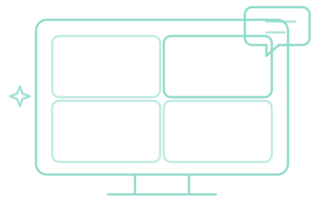

Zuletzt im KI Lab
Was interessiert Sie?
Bisherige Veranstaltungen
Wie läuft ein KI Lab ab?
- Seit Januar 2026
- Jeden ersten Dienstag im Monat
- Online über Microsoft Teams
- Kostenlos
AKKI · Seit Januar 2026
KI kennenlernen. Erfahrungen austauschen. Wissen vertiefen.
